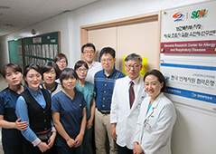

한국인체자원 네트워크(KBN)
한국인체자원은행 네트워크
질병관리본부 국립중앙인체자원은행과 17개 대학병원 소재 인체자원단위은행이 함께 국가 인체자원은행 네트워크인 한국인체자원은행네트워크(KBN)를 구성하여, 대규모 인구집단
기반 (중앙은행) 및 질병 기반 (17개 단위은행) 인체자원을 수집, 관리하여 연구자들에게 제공하고 있으며, 2013년부터 국립마산병원과 한국원자력의학원이 KBN 협력병원으로 참여하고 있습니다.
강원대병원
닫기강원대병원
주 소
강원도 춘천시 백령로 156 강원대학교병원인체자원단위은행
전 화
033-258-2107이메일
knuhbiobank@knuh.or.kr
-
역할 | 은행유형 | 지정년도
인체자원단위은행 | 질병 기반 인체자원은행 | 2009년 -
인체자원 보유현황
180,512 바이알 수집(COPD, 치매, 림프계질환) -
인체자원 분양 현황
78개 연구과제에 인체유래물 11,810 바이알 분양 -
인체자원 활용성과
17편 논문 생산
순천향대부천병원
닫기
순천향대부천병원
주 소
경기도 부천시 원미구 조마루로 170순천향대학교 부천병원 인체자원단위은행
전 화
032-621-6305이메일
biobank@schmc.ac.kr
-
역할 | 은행유형 | 지정년도
인체자원단위은행 | 질병 기반 인체자원은행 | 2008년 -
인체자원 보유현황
219,156 바이알 수집(알러지질환, 호흡기질환) -
인체자원 분양 현황
154 연구과제에 인체유래물 30,340 바이알 분양 -
인체자원 활용성과
83편 논문 및 1건 특허 생산
고려대구로병원
닫기고려대구로병원
주 소
서울특별시 구로구 구로동로 148고려대학교 구로병원 인체자원단위은행
전 화
02-2626-2409이메일
gurobiobank@gmail.com
-
역할 | 은행유형 | 지정년도
인체자원단위은행 | 질병 기반 인체자원은행 | 2011년 -
인체자원 보유현황
157,521 바이알 수집(각종 암(갑상선암, 간암, 폐암, 대장암 등),
심혈관질환, 신경계질환, 이비인후과계질환) -
인체자원 분양 현황
116개 연구과제에 인체유래물 22,733 바이알 분양 -
인체자원 활용성과
19편 논문 생산
서울대병원
닫기
서울대병원
주 소
서울특별시 종로구 대학로 101 서울대학교병원의생명연구원 인체자원단위은행 4208호
전 화
02-2072-1717이메일
snuhbiobank@gmail.com
-
역할 | 은행유형 | 지정년도
인체자원단위은행 | 질병 기반 인체자원은행 | 2010년 -
인체자원 보유현황
658,469 바이알 수집(신장질환(사구체신염, 급성/만성 신부전 등) 내분비, 영양 및 대사질환, 근골격계질환,
여성생식기 악성종양, 우울증, 심혈관질환(심방세동/조동)) -
인체자원 분양 현황
170개 연구과제에 인체유래물 20,674 바이알 분양 -
인체자원 활용성과
22편 논문 생산
서울아산병원
닫기서울아산병원
주 소
서울특별시 송파구 올림픽로 43길 88서울아산병원 인체자원단위은행
전 화
02-3010-4523이메일
asan-brc@amc.seoul.kr
-
역할 | 은행유형 | 지정년도
인체자원단위은행 | 질병 기반 인체자원은행 | 2008년 -
인체자원 보유현황
288,693 바이알 수집(20여개의 장기에서 발생하는 각종 암) -
인체자원 분양 현황
212개 연구과제에 인체유래물 22,413 바이알 분양 -
인체자원 활용성과
43편 논문 생산
아주대병원
닫기아주대병원
주 소
경기도 수원시 영통구 월드컵로 164아주대학교병원 인체자원단위은행
전 화
031-219-4383이메일
gastrolab@hanmail.net
-
역할 | 은행유형 | 지정년도
인체자원단위은행 | 질병 기반 인체자원은행 | 2011년 -
인체자원 보유현황
361,555 바이알 수집(간 및 소화기계 질환) -
인체자원 분양 현황
134개 연구과제에 인체유래물 25,688 바이알 분양 -
인체자원 활용성과
35편 논문 및 1건 특허 생산
충북대병원
닫기충북대병원
주 소
충청북도 청주시 서원구 1 순환로 776충북대학교병원 인체자원단위은행
전 화
043-269-6264이메일
cbnubiobank@hanmail.net
-
역할 | 은행유형 | 지정년도
인체자원단위은행 | 질병 기반 인체자원은행 | 2009년 -
인체자원 보유현황
324,635 바이알 수집(말기암, 만성질환 및 퇴행성질환, 심혈관질환) -
인체자원 분양 현황
95개 연구과제에 인체유래물 13,342 바이알 분양 -
인체자원 활용성과
38편 논문 생산
충남대병원
닫기충남대병원
주 소
대전광역시 중구 문화로 282충남대학교병원 인체자원단위은행
전 화
042-280-8487이메일
biscuit@cnuh.co.kr
-
역할 | 은행유형 | 지정년도
인체자원단위은행 | 질병 기반 인체자원은행, 국립중앙인체자원은행 백업은행 | 2008년 -
인체자원 보유현황
270,181 바이알 수집(노인성질환, 심혈관질환) -
인체자원 분양 현황
191개 연구과제에 인체유래물 25,631 바이알 분양 -
인체자원 활용성과
41편 논문 및 16건 특허 생산
원광대병원
닫기원광대병원
주 소
전라북도 익산시 무왕로 895원광대학교 의과대학병원 인체자원단위은행
전 화
063-859-1816이메일
wonbio@wkuh.org
-
역할 | 은행유형 | 지정년도
인체자원단위은행 | 질병 기반 인체자원은행 | 2009년 -
인체자원 보유현황
132,793 바이알 수집
(소화기계, 호흡기계, 근골격계, 면역계질환, 종양성 질환) -
인체자원 분양 현황
74개 연구과제에 인체유래물 11,629 바이알 분양 -
인체자원 활용성과
33편 논문 생산
전북대병원
닫기전북대병원
주 소
전라북도 전주시 덕진구 건지로 20전북대학교병원 인체자원단위은행
전 화
063-250-2570이메일
jbnubiobank@hanmail.net
-
역할 | 은행유형 | 지정년도
인체자원단위은행 | 질병 기반 인체자원은행 | 2008년 -
인체자원 보유현황
332,813 바이알 수집
(소화기계암, 내분비계암, 조현병, 쯔쯔가무시병 등 비종양성질환) -
인체자원 분양 현황
112개 연구과제에 인체유래물 17,082 바이알 분양 -
인체자원 활용성과
32편 논문 생산
경북대병원
닫기경북대병원
주 소
대구광역시 중구 동덕로 130경북대학교병원 인체자원단위은행
전 화
053-200-6742이메일
knuhbiobank@knu.ac.kr
-
역할 | 은행유형 | 지정년도
인체자원단위은행 | 질병 기반 인체자원은행 | 2008년 -
인체자원 보유현황
411,954 바이알 수집
(7대 주요 암, 만성질환 및 심혈관질환, 난치성노인병) -
인체자원 분양 현황
153개 연구과제에 인체유래물 32,711 바이알 분양 -
인체자원 활용성과
62편 논문 및 2건 특허생산
계명대동산병원
닫기계명대동산병원
주 소
대구광역시 중구 달성로 56계명대학교 동산병원 인체자원단위은행
전 화
053-250-7756이메일
biobank@dsmc.or.kr
-
역할 | 은행유형 | 지정년도
인체자원단위은행 | 질병 기반 인체자원은행 | 2009년 -
인체자원 보유현황
400,192 바이알 수집
(주요 암(예, 간암), 간담도질환, 비뇨생식계질환) -
인체자원 분양 현황
153개 연구과제에 인체유래물 20,781 바이알 분양 -
인체자원 활용성과
34편 논문 생산
화순전남대병원
닫기화순전남대병원
주 소
전라남도 화순군 화순읍 서양로 322화순전남대학교병원 인체자원단위은행
전 화
061-379-7704이메일
cnuhhbiobank@naver.com
-
역할 | 은행유형 | 지정년도
인체자원단위은행 | 질병 기반 인체자원은행, 국립중앙인체자원은행 백업은행 | 2008년 -
인체자원 보유현황
391,048 바이알 수집(한국인 호발 암(예, 유방암, 폐암, 대장암, 백혈병) -
인체자원 분양 현황
155개 연구과제에 인체유래물 23,156 바이알 분양 -
인체자원 활용성과
53편 논문 생산
경상대병원
닫기경상대병원
주 소
경상남도 진주시 강남로 79경상대학교병원 인체자원단위은행
전 화
055-750-9256이메일
biobank@gnu.ac.kr
-
역할 | 은행유형 | 지정년도
인체자원단위은행 | 질병 기반 인체자원은행 | 2008년 -
인체자원 보유현황
1,495,201 바이알 수집
(신생아, 소아청소년, 관상동맥, 소화기 및 감염계통질환) -
인체자원 분양 현황
121개 연구과제에 인체유래물 22,058 바이알 분양 -
인체자원 활용성과
41편 논문 생산
부산대병원
닫기부산대병원
주 소
부산광역시 서구 구덕로 179부산대학교병원 인체자원단위은행
전 화
051-240-7055이메일
pnuhbiobank@hanmail.net
-
역할 | 은행유형 | 지정년도
인체자원단위은행 | 질병 기반 인체자원은행, 국립중앙인체자원은행 백업은행 | 2008년 -
인체자원 보유현황
549,532 바이알 수집
(주요 암(예, 위암, 유방암, 갑상샘암, 대장암), 간염, 심혈관질환) -
인체자원 분양 현황
194개 연구과제에 인체유래물 23,559 바이알 분양 -
인체자원 활용성과
59편 논문 및 4건 특허 생산
인제대부산백병원
닫기인제대부산백병원
주 소
부산광역시 부산진구 복지로 75인제대학교 부산백병원 인체자원단위은행
전 화
051-890-8659이메일
biobank@paik.ac.kr
-
역할 | 은행유형 | 지정년도
인체자원단위은행 | 질병 기반 인체자원은행 | 2011년 -
인체자원 보유현황
342,406 바이알 수집(주요 암(예, 유방암, 혈액암, 갑상선암, 대장암, 위암, 자궁암, 폐암 등),
조혈기관 질환, 말기 신장 질환의 신장이식 및 기타 비종양성 신장 질환) -
인체자원 분양 현황
96개 연구과제에 인체유래물 9,277 바이알 분양 -
인체자원 활용성과
18편 논문 생산
제주대병원
닫기제주대병원
주 소
제주특별자치도 제주시 아란 13길 15제주대학교병원 인체자원단위은행
전 화
064-717-1512이메일
hjn129@naver.com
-
역할 | 은행유형 | 지정년도
인체자원단위은행 | 질병 기반 인체자원은행 | 2011년 -
인체자원 보유현황
87,235 바이알 수집(위암, 대장암, 폐암, 유방암, 간담췌암, 갑상샘암,
림프종 등의 고형암, 조혈계암, 만성질환, 유전질환, 건강대조군) -
인체자원 분양 현황
42개 연구과제에 인체유래물 8,035 바이알 분양 -
인체자원 활용성과
22편 논문 생산
한국원자력의학원
닫기한국원자력의학원
주 소
서울특별시 노원구 노원로 75한국원자력 의학원 국가방사선혈액자원은행
전 화
02-970-1645이 메 일
krb_biobank@kirams.re.kr홈페이지
http://www.krb.re.kr
-
역할 | 은행유형 | 지정년도
KBN 협력병원 | 혈액자원은행 | 2013년 -
인체자원 보유현황
3만2천 명 분
(방사선작업종사자, 방사선치료암환자, 정상인, 유방암, 갑상선암, 대장암, 폐암, 위암환자 등) -
인체자원 분양 현황
32개 연구과제에 2천8백 바이알 분양 -
인체자원 활용성과
10편 논문 생산
국립중앙인체자원은행
닫기국립중앙인체자원은행
주 소
충청북도 청주시 흥덕구 오송읍 오송생명2로 200전 화
043-719-6520이메일
biobank@korea.kr
-
역할 | 은행유형
국립중앙인체자원은행, 인체자원단위은행 운영 지원 | 대규모 인구집단 기반 인체자원은행 -
인체자원 보유현황
39만 5천명분 수집
(질병관리본부 코호트 사업 및 국민건강영양조사사업 등 대규모 인구집단 기반 자원) -
인체자원 분양 현황
518개 연구과제에 인체유래물 43만 바이알,
유전정보 및 역학정보 각각 557건, 788건 분양 -
인체자원 활용성과
453편 논문 및 28건 특허 생산
국립마산병원
닫기국립마산병원
주 소
경남 창원시 마산합포구 가포로 215국립마산병원 결핵자원은행
전 화
055-246-5626이 메 일
mnthtbbank@korea.kr홈페이지
http://www.mnth.go.kr
-
역할 | 은행유형 | 지정년도
KBN 협력병원 | 결핵검체은행 | 2013년 -
인체자원 보유현황
객담: 9,388개, 혈청: 7,108개, 소변: 2,162개,
결핵균주: 5,000주 이상(2009~2016년도) -
인체자원 분양 현황
객담: 772개, 혈청: 100개, 소변: 400개,
결핵균주: 1,910주, 11개 연구과제(2009~2016년) -
인체자원 활용성과
포스터 11개 발표